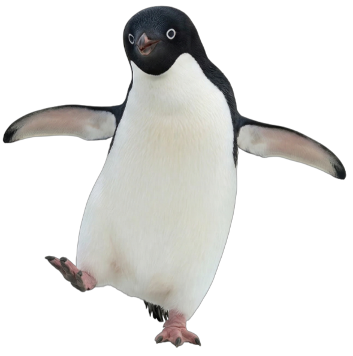
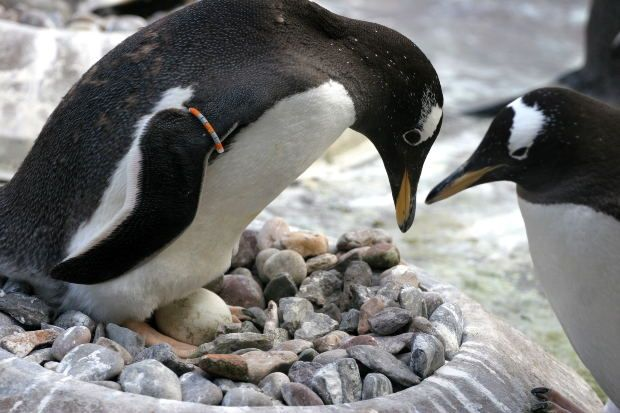
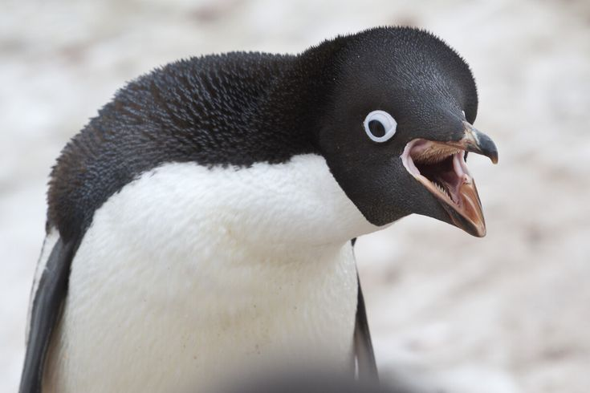
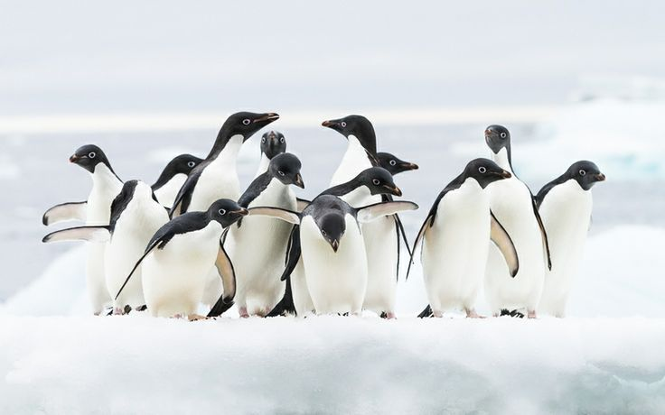
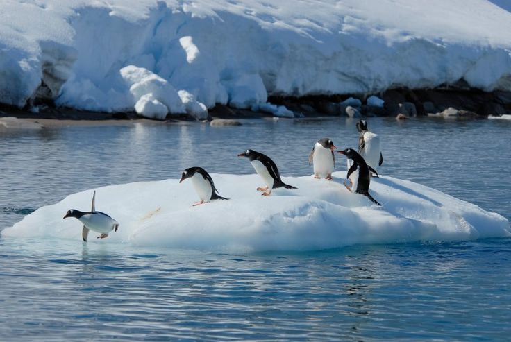
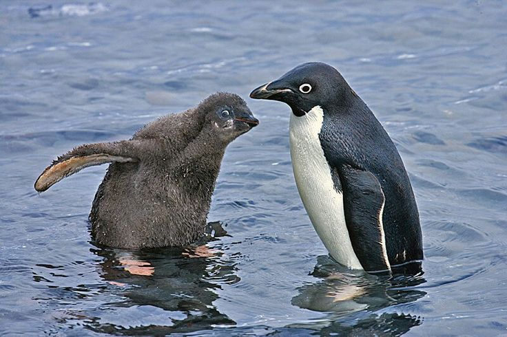
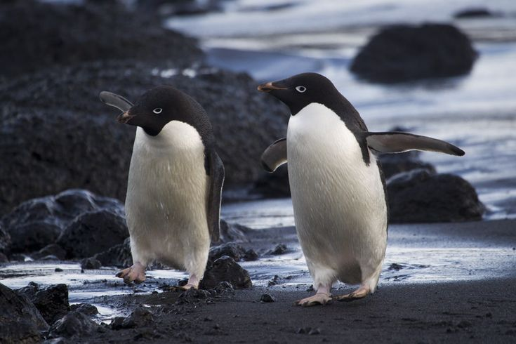

Conocidos por sus anillos blancos alrededor de los ojos y su actitud enérgica, viven exclusivamente a lo largo de las costas heladas del continente antártico.



70 — 73 cm
3.8 — 8.2 kg
Costas de la Antártida
Krill antártico y calamares


